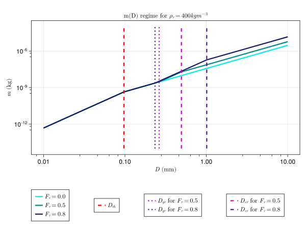
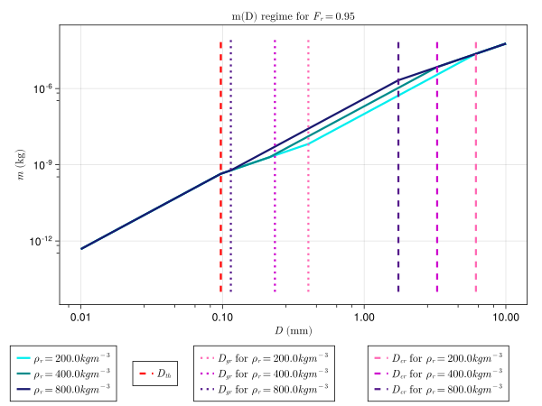
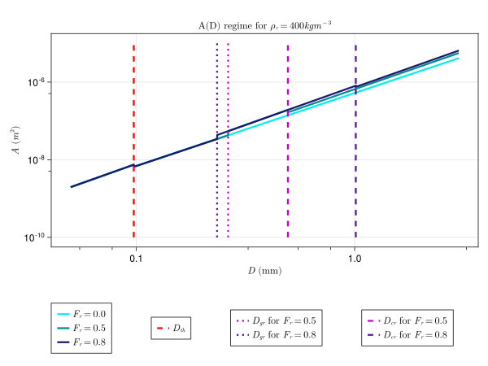
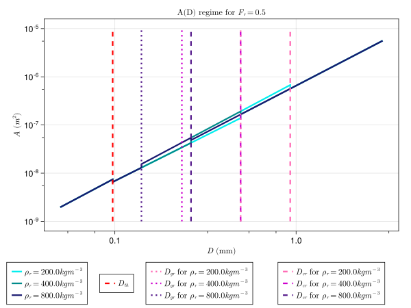

P3 Scheme
The P3Scheme.jl module implements the predicted particle properties (P3) scheme for ice-phase microphysics developed by [22] The P3 scheme is a 2-moment, bulk scheme involving a single ice-phase category with 4 degrees of freedom: total mass, rime mass, rime volume, and number mixing ratios. Traditionally, cloud ice microphysics schemes use various predefined categories (such as ice, graupel, or hail) to represent ice modes, but the P3 scheme sidesteps the problem of prescribing transitions between ice categories by adopting a single ice category and evolving its properties. This simplification aids in attempts to constrain the scheme's free parameters.
The prognostic variables are:
- $N_{ice}$ - number concentration 1/m3
- $q_{ice}$ - ice mass density kg/m3
- $q_{rim}$ - rime mass density kg/m3
- $B_{rim}$ - rime volume - (volume of rime per total air volume: dimensionless)
TODO - At some point we should switch to specific humidities...
Assumed particle size distribution (PSD)
Following [22], the scheme assumes a gamma distribution for the concentration of particles per unit volume based on particle size measurements obtained by [23] in tropical and midlatitude ice clouds and implemented by [24]:
\[N'(D) = N_{0} D^\mu \, e^{-\lambda \, D}\]
where:
- $N'$ is the number concentration in $m^{-4}$
- $D$ is the maximum particle dimension in $m$,
- $N_0$ is the intercept parameter in $m^{-4}$,
- $\mu$ is the shape parameter (dimensionless),
- $\lambda$ is the slope parameter in $m^{-1}$.
We assume $\mu \ = 0.00191 \; \lambda \ ^{0.8} - 2$. Following [24] we limit $\mu \ \in (0,6)$. A negative $\mu$ can occur only for very small mean particle sizes$\frac{1}{\lambda} < ~0.17 mm$. $N_0$ and $\lambda$ can be found using different moments of the PSD, namely the total number concentration $N$ and mass mixing ratio $q$, where
\[N = \int_{0}^{\infty} \! N'(D) \mathrm{d}D\]
\[q = \int_{0}^{\infty} \! m(D) N'(D) \mathrm{d}D\]
For liquid droplets, these equations are solved without issue, but for ice, the third moment of the size distribution listed above (i.e. $\int_{0}^{\infty} \! m(D) N'(D) \mathrm{d}D$) varies as the mass relation varies across the PSD (see below for the mass regime documentation). On the other hand, the first moment of the PSD, the number concentration, does not vary across the PSD and yields $N = \frac{N_0}{\lambda}$.
TODO - The scheme uses a mean particle size value $D_m$ for each time step to determine which mass relation to employ. In other words, $N_0$ and $\lambda$ must be calculated for the five different mass relations below to accommodate ranges of $D_m$ corresponding to each mass relation. For mean particle sizes that employ the mass relations characterized by graupel and by partially rimed ice, the mass relations are time-dependent due to the presence of $\rho_g$ and $F_r$. This complicates the scheme's use of the PSD, and as a result, writing analytical formulas for the PSD parameters is challenging.
Assumed particle mass relationships
The mass $m$ of particles as a function of maximum particle dimension $D$ is a piecewise function with variable thresholds described by the following table.
| particle properties | condition(s) | m(D) relation |
|---|---|---|
| small, spherical ice | $D < D_{th}$ | $\frac{\pi}{6} \rho_i \ D^3$ |
| large, unrimed ice | $q_{rim} = 0$ and $D > D_{th}$ | $\alpha_{va} \ D^{\beta_{va}}$ |
| dense nonspherical ice | $q_{rim} > 0$ and $D_{th} < D < D_{gr}$ | $\alpha_{va} \ D^{\beta_{va}}$ |
| graupel (completely rimed, spherical) | $q_{rim} > 0$ and $D_{gr} < D < D_{cr}$ | $\frac{\pi}{6} \rho_g \ D^3$ |
| partially rimed ice | $q_{rim} > 0$ and $D > D_{cr}$ | $\frac{\alpha_{va}}{1-F_r} D^{\beta_{va}}$ |
where:
- $D_{th}$, $D_{gr}$, $D_{cr}$ are particle size thresholds in $m$,
- $\rho_i$ is cloud ice density in $kg m^{-3}$,
- $\beta_{va} = 1.9$ is a dimensionless parameter from [25] (based on measurements of vapor diffusion and aggregation in midlatitude cirrus),
- $\alpha_{va} = 7.38 \; 10^{-11} \; 10^{6 \beta_{va} - 3}$ in $kg m^{-β_{va}}$ is a parameter modified for units from [25] in base SI units (also based on measurements of vapor diffusion and aggregation in midlatitude cirrus),
- $\rho_g$ is the bulk density of graupel in $kg m^{-3}$.
The first threshold is solely determined by the free parameters: $D_{th} = (\frac{\pi \rho_i}{6\alpha_{va}})^{\frac{1}{\beta_{va} - 3}}$. The remaining thresholds: $D_{gr}$, $D_{cr}$, as well as the bulk density of graupel $\rho_{g}$, and the bulk density of the unrimed part $\rho_d$ form a nonlinear system:
- $D_{gr} = (\frac{6\alpha_{va}}{\pi \rho_g})^{\frac{1}{3 - \beta_{va}}}$
- $D_{cr} = [ (\frac{1}{1-F_r}) \frac{6 \alpha_{va}}{\pi \rho_g} ]^{\frac{1}{3 - \beta_{va}}}$
- $\rho_g = \rho_r F_r + (1 - F_r) \rho_d$
- $\rho_d = \frac{6\alpha_{va}(D_{cr}^{\beta{va} \ - 2} - D_{gr}^{\beta{va} \ - 2})}{\pi \ (\beta_{va} \ - 2)(D_{cr}-D_{gr})}$
where
- $F_r = \frac{q_{rim}}{q_{ice}}$ is the rime mass fraction,
- $\rho_{r} = \frac{q_{rim}}{B_{rim}}$ is the predicted rime density.
The system is solved using NonlinearSolve.jl.
TODO - The use of NonlinearSolve.jl is not ideal because of its runtime and memory allocation requirements. Currently, there is also a look-up table NetCDF file which could be used to look up values of the quantities which form the nonlinear system. However, the look-up table is not GPU-compatible and would require too much memory in an Earth System Model. The current approach may be of use for testing and for visualization of the system, but other options, such as using RootSolvers.jl or using a simpler fit that approximates the solver output, are more suitable long term solutions which do not require outside packages which employ auto-differentiation or use memory, both of which do not suit the needs of CliMA.
Below we show the m(D) regime, replicating Figures 1 (a) and (b) from [22].
include("P3SchemePlots.jl")
p3_m_plot1(["cyan2", "cyan4", "midnightblue"], ["hotpink", "magenta3", "purple4"])
p3_m_plot2(["cyan2", "cyan4", "midnightblue"], ["hotpink", "magenta3", "purple4"])CairoMakie.Screen{SVG}


Assumed particle projected area relationships
The projected area $A$ of particles as a function of maximum particle dimension $D$ is another piecewise function with variable breakpoints described by the following table. The mean particle dimension $D_m$, a predicted property, determines which portion of the piecewise function to use for each time step.
| particle properties | condition(s) | A(D) relation |
|---|---|---|
| small, spherical ice | $D < D_{th}$ | $\frac{\pi}{4} D^2$ |
| large, unrimed ice | $q_{rim} = 0$ and $D > D_{th}$ | $\gamma \ D^{\sigma}$ |
| dense nonspherical ice | $q_{rim} > 0$ and $D_{th} < D < D_{gr}$ | $\gamma \ D^{\sigma}$ |
| graupel (completely rimed, spherical) | $q_{rim} > 0$and $D_{gr} < D < D_{cr}$ | $\frac{\pi}{4} D^2$ |
| partially rimed ice | $q_{rim} > 0$ and $D > D_{cr}$ | $F_{r} \frac{\pi}{4} D^2 + (1-F_{r})\gamma \ D^{\sigma}$ |
where all variables from the m(D) regime are as defined above, and:
- $\gamma = 0.2285$ ($m^{2 - \sigma}$) where
- $\sigma = 1.88$ (dimensionless), both from the aggregates of side planes, columns, bullets, and planar polycrystals in [26].
TODO - As mentioned in issue #151, the units of $\gamma$ and $\sigma$ are not immediately clear from [26] and [22]. To resolve this issue, it may be useful to contact the authors of the paper, or, examine the representative figures below to check units. It has occured to me that the units of $D$ are probably m and that the units of $A$ are probably m2. I have assumed these dimensions for the time being. Another likely scenario would be if $D$ had units of mm, in which case we would have $\gamma = 0.2285 \; 10^{3 \sigma}$ to correct for units. However, the plots of area versus particle dimension look outlandish in this case.
The figures below, imitating the above mass regime figures, illustrate the particle projected area regime:
include("P3SchemePlots.jl")
p3_a_plot1(["cyan2", "cyan4", "midnightblue"], ["hotpink", "magenta3", "purple4"])
p3_a_plot2(["cyan2", "cyan4", "midnightblue"], ["hotpink", "magenta3", "purple4"])CairoMakie.Screen{SVG}


Assumed particle fall speed relationships
Particle fall speed ($V$) as a function of maximum particle dimension $D$, following [22], uses parameters and coefficients derived by [27] and an air density modification provided by [28]. The $V(D)$ relation is integrated over the PSD to obtain mass and number-weighted fall speeds for the four prognostic variables. Although the fall speed regime takes the form of a power law function of maximum particle dimension with many layers of interdependent parameters, it is important to note that the Best/Davies number $X$ is also dependent on maximum particle dimension $D$.
The total mass, rime volume, and rime mass specific humidities sediment according to the mass-weighted fall speed,
\[V_{m} = \frac{\int_{0}^{\infty} \! V(D) m(D) N'(D) \mathrm{d}D}{\int_{0}^{\infty} \! m(D) N'(D) \mathrm{d}D}\]
while sedimentation of the number concentration is governed by the number-weighted fall speed,
\[V_{m} = \frac{\int_{0}^{\infty} \! V(D) N'(D) \mathrm{d}D}{\int_{0}^{\infty} \! N'(D) \mathrm{d}D}\]
The air density modification is applied only to particles having undergone sedimentation, and is given by:
\[V(D) = (\frac{\rho_{o}}{\rho})^{0.54} a D^b\]
where:
- $D$ is the maximum particle dimension
- $\rho_{o}$ is a reference air density
- $\rho$ is particle density
Without this modification, the relation takes the form of the below power law:
\[V(D) = a D^b\]
where:
- $a = a_{1} \nu_{air}^{1 - 2 b_{1}} (\frac{2 \alpha_{va} g}{\rho_{air} \gamma})^b_{1}$
- $b = \frac{b_{1} (2 - \sigma) - 1}{1 - b_{1}}$
These parameters are governed by the derived parameters:
- $a_{1} = \frac{C_{2} ([1 + C_{1} X^{0.5}]^{0.5} - 1)^{2} - a_{o} X^{b_{o}}}{X^{b_{1}}}$
- $b_{1} = \frac{C_{1} X^{0.5}}{2 ([1 + C_{1} X^{0.5}]^{0.5} - 1) (1 + C_{1} X^{0.5})^{0.5}} - \frac{a_{o} b{o} X^{b_{o}}}{C_{2} ([1 + C_{1} X^{0.5}]^{0.5} - 1)^{2}}$
where:
- $C_{1} = \frac{4}{\delta_{o}^{2} C_{o}^{0.5}}$
- $C_{2} = \frac{\delta_{o}^{2}}{4}$
- $\delta_{o} = 5.83$, the surface roughness constant for ice particles
- $C_{o} = 0.6$, another surface roughness constant for ice particles
And for $X > 1.56 \; 10^{5}$ (conditions for which ice crystal aggregates are present, i.e. stratiform conditions):
- $a_{o, agg} = 1.7 \; 10^{-3}$, a boundary layer depth ($\delta$) and effective area ($A_{e}$) dilation correction constant for aggregates
- $b_{o, agg} = 0.8$, a second boundary layer depth ($\delta$) and effective area ($A_{e}$) dilation correction constant for aggregates
while for $X < 1.56 \; 10^{5}$ (convective conditions, i.e. for graupel and hail):
- $a_{o, grau} = 10^{-5}$, a boundary layer depth ($\delta$) and effective area ($A_{e}$) dilation correction constant for graupel and hail
- $b_{o, grau} = 1$, a second boundary layer depth ($\delta$) and effective area ($A_{e}$) dilation correction constant for graupel and hail
TODO - The condition $X > 1.56 \; 10^{5}$ is given when the different Re-X relationships are introduced in section 2a of [27]. In section 2b, the authors go on to state that "all aggregates from natural clouds should have $X < 10^{8}$, so perhaps the aggregate-relevant parameters should only be used for $1.56 \; 10^{5} < X < 10^{8}$.
The scheme uses physical constants from CliMAParameters.jl:
- $\nu_{air} = 0.000016$ (m2/s), kinematic viscocity of air
- $\rho_{air} = 1.225$ (kg/m3), density of air
- $\mu_{air} = `\nu_{air} \rho_{air}$ (kg/ms), dynamic viscocity of air
- $g = 9.81$ (m/s2), acceleration due to gravity
And the dimensionless fluid dynamical numbers are defined for $X > 1.56 \; 10^{5}$ (conditions for which ice crystal aggregates are present):
- $Re_{agg} = \frac{\delta_{o}^2}{4}((1 + \frac{4 X^0.5}{\delta_{o}^2 C_{o}^0.5})^0.5 - 1)^{2} - a_{o, agg} X^b_{o, agg}$, Reynold's number used for aggregates
- $X_{agg} = \frac{4}{3} \frac{\g \k \A_{r}^{n - 1} D^{3}}{\rho_{a} \nu^{2}}$ from [29], where $k = 0.015$ and $n = 1.5$.
$A_{r}$ is defined by [27] to be the particle projected area as predicted by the model divided by the projected area of a sphere with diameter $D$. $A_{r}$ is described in depth by [29]: symbolic expressions are given for various crystal geometries, and empirically derived values are also given in Table 1 of [29] for various geometries. For the purposes of this model, and with the definition given by [27] in mind, [29]'s $A_{r}$ relation for planar crystals, $A_{r} = \frac{A}{(\frac{\pi}{4}) D^{2}}$ is the most reasonable option. This is a simple relation which depends on our own particle projected area regime above and which does not introduce new parameters.
TODO - equation (9) from [27] and equation (14) from [29], which should be identical, are not: there is a $3$ in the denominator of [29]'s equation (14) which is not in [27]'s equation (9). However, I believe [29]'s equation (14) is right because [27]'s equation (9) cites [29]'s equation (14), and the general treatment of the Reynolds-Best number relations for aggregates used in [27] is attributed to [29]. TODO#2 - for k and n in the same equation, no particular value is really specified as far as I could tell in section 2b of [27], yet many are given in [29]. See Table 1 of [29] for all of the k, n values. I went with two that seemed representative for aggregates.
And for $X < 1.56 \; 10^{5}$ (non-aggregate conditions):
- $X_{grau} = \frac{2 \alpha_{va} g \rho_{air} D^{\beta_va + 2 - \sigma}}{\gamma \nu_{air}^2}$, Best/Davies number expressed in terms of m(D) and A(D) regimes
- $Re_{grau} = \frac{\delta_{o}^2}{4}((1 + \frac{4 X^0.5}{\delta_{o}^2 C_{o}^0.5})^0.5 - 1)^{2}$, Reynold's numnber for graupel and hail (we drop the $a_{o} X^b_{o}$ term here)
TODO - Explore setting $a_{o} = a_{o, grau}$ and same for $b_{o}$ rather than dropping the $a_{o} X^b_{o}$ term for $Re_{grau}$. (The article says that the term "may not be needed" for graupel and hail, so more investigation may be beneficial for our purposes.) TODO#2 - $A_{e} = A(1 + \frac{\delta_o}{Re^0.5})$, the effective particle projected area, is introduced by [27] as a more accurate area term to use for aggregates accounting for increased boundary depth $\delta$. The authors write that this approximation is "fairly valid for aggregates" in section 2a.